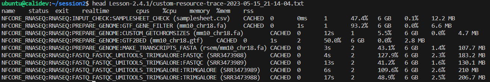

2.4. Using multiple configuration files at once
Create and apply a custom configuration file for over-riding default containers
Create and apply a custom configuration file for resource tracing
Create and apply a custom configuration file for MultiQC
Apply multiple custom configuration files in a single workflow execution with
-c <conf-1,conf2,...>
Using multiple configuration files allows you to customise nf-core pipelines to your specific needs. Depending on how you work, where you work, and what pipelines you run, you may have configuration files that: - Handle distinct issues - Can be applied to specific infrastructures - Can be shared by multiple nf-core pipelines
In this lesson we will create three custom configuration files that affect different aspects of the workflow and apply them to the one run command.
2.4.1. Configure your run to use a non-default container
Note that for deploying nf-core workflows, it is not recommended to replace the tools within the workflow, as this will decrease portability and reproducibilty! This exercise is to demonstrate how you can specify containers, as this may aid you in developing and testing your own Nextflow workflows
For this example, we are going to test out the latest version of Trim Galore. We have been using the default version of Trim Galore that is executed with nf-core/rnaseq revision 3.11.1.
We can easily view the versions of all tools used from the software_versions.yml file created by default in the <outdir>/pipeline_info directory by nf-core workflows OR by viewing the same information from the ‘nf-core/rnaseq Software Versions’ section of the MultiQC html report.
➤ Identify the version of Trim Galore that has been used in our runs so far from the software_versions.yml file.
You might view the file by opening it from the VS Code explorer pane, using more command, or grep for the tool name.
more Lesson-2.3.4/pipeline_info/software_versions.yml
##
#TRIMGALORE:
# cutadapt: '3.4'
# trimgalore: 0.6.7
#The process names are listed in alphabetical order, with the tools and versions used in the script section of the process listed below the process name. We can see for TRIMGALORE process that version 0.6.7 of Trim Galore was used.
There is a newer version of Trim Galore available, version 0.6.10. Recall that we have been accessing some materials on CernVM-FS, a read-only filesystem which provides shared access to common bioinformatics reference datasets as well as Singularity containers of everything stored in Biocontainers.
CernVM-FS comes pre-mounted on Pawsey Nimbus VMs using the Pawsey Bio - Ubuntu 22.04 - 2023-03 image, so we can access and apply the Trim Galore biocontainer by specifying the path to this remote image within the process scope of a custom config, using the ‘withName’ process selector.
We could just as easily specify an alternate remote source, such as quay.io, or point to a local image.
❓ For maintaining best practice, where is the best place for the container definition?
Within the
custom-nimbus.configinstitutional config fileWithin a separate custom config file named eg
custom-tools.config
Why do you think this?
Remember, Nextflow’s portability is achieved by separating workflow implementation from the configuration settings required to execute it. In the event that we are testing a different tool version, this should not be placed within the institutional config that is shareable with others using the same infrastructure. Swapping out tool versions is a bespoke adaptation of the nf-core workflow that could harm reproducibility if it was inadvertently executed. By placing it within a clearly named custom config file, there is less chance of unwittingly executing a workflow that does not match the expected utilisation of tools.
➤ First, identify the container for the 0.6.10 version of Trim Galore:
Containers are mounted at the path /cvmfs/singularity.galaxyproject.org, with sub-directories based on the first 2 letters of the tool name, eg /cvmfs/singularity.galaxyproject.org/t/r/ for Trim Galore containers.
ls /cvmfs/singularity.galaxyproject.org/t/r/trim*
##
# /cvmfs/singularity.galaxyproject.org/t/r/trim-galore:0.6.10--hdfd78af_0
##➤ Next, identify the execution path for the TRIM_GALORE module:
grep -i galore nf-core-rnaseq-3.11.1/workflow/conf/modules.config
##
# if (params.trimmer == 'trimgalore') {
# withName: '.*:FASTQ_FASTQC_UMITOOLS_TRIMGALORE:FASTQC' {
# if (params.trimmer == 'trimgalore') {
# withName: '.*:FASTQ_FASTQC_UMITOOLS_TRIMGALORE:TRIMGALORE' {
# params.extra_trimgalore_args ? params.extra_trimgalore_args.split("\\s(?=--)") : ''
##➤ Open a file for editing named custom-tools.config, and start building your config with the process scope and ‘withName’ selector that we covered in Session 2.3
process {
withName: {
}
}➤ Then copy the Trim Galore module execution path:
process {
withName: '.*:FASTQ_FASTQC_UMITOOLS_TRIMGALORE:TRIMGALORE' {
}
}➤ Finally, copy the container details:
process {
withName: '.*:FASTQ_FASTQC_UMITOOLS_TRIMGALORE:TRIMGALORE' {
container = '/cvmfs/singularity.galaxyproject.org/t/r/trim-galore:0.6.10--hdfd78af_0'
}
}➤ Execute the run supplying our two configuration files:
- When adding multiple custom configs, we apply them to
-cin a comma-delimited list - If you haven’t already done so, delete or comment out the ‘withName’ resource content we applied to the STAR_ALIGN process in the
custom-nimbus.configfile - Specify output directory
Lesson-2.4.1
nextflow run nf-core-rnaseq-3.11.1/workflow/main.nf \
-profile workshop \
-c custom-nimbus.config,custom-tools.config \
-params-file workshop-params.yaml \
--outdir Lesson-2.4.1 \
-resume ➤ After your run has completed, check that the updated version of Trim Galore has been used:
grep -i galore Lesson-2.4.1/pipeline_info/software_versions.yml
##
#TRIMGALORE:
# trimgalore: 0.6.10
##2.4.2. Customised resource tracing
Running Nextflow workflows with the flag -with-trace writes a trace report named trace.txt in the working directory.
nf-core pipelines by default create an execution_trace file within <outdir>/pipeline_info, with the default fields that Nextflow -with-trace applies. A trace report can be customised to include any combination of available fields using the Nextflow -fields flag.
In this exercise, we will create a custom configuration file that writes a detailed resource tracing file including our customised fields.
To begin, we will extract these custom fields from a previous run using the nextflow log command.
Using the trace report fields, write a nextflow log command to query the following for a previous workflow run:
- Task name
- Task status
- Task exit status
- Task execution time (realtime)
- Number of cpus requested for the task
- Percentage of CPU used by the process (use pcpu rather than %cpu)
- Amount of memory requested for the task
- Percentage of memory used by the process (use pmem rather than %mem)
- Resident set size of the process (rss)
First, run nextflow log with no arguments to obtain the name of your last run (unless you can remember it!)
Then, supply that run name to the command below:
nextflow log <run_name> -f name,status,exit,realtime,cpus,pcpu,memory,pmem,rssIf there is a specific combination of fields you would like to regularly capture for your pipeline runs, perhaps for resource benchmarking, it would be useful to have a custom configuration file that can be optionally applied to any run. Let’s make a portable configuration file for resource tracing called custom-trace.config.
Because this config is not infrastructure or pipeline specific, we can share it with collaborators and use it across multiple pipelines.
➤ Open a file for editing called custom-trace.config and add the following content: > Note that we need to use %cpu and %mem, as per the Nextflow documentation and not pcpu and pmem as we applied on the command line according to this issue.
// Define timestamp, to avoid overwriting existing trace
def trace_timestamp = new java.util.Date().format('yyyy-MM-dd_HH-mm-ss')
// Generate custom resource trace file
trace {
enabled = true
file = "${params.outdir}/custom-resource-trace-${trace_timestamp}.txt"
fields = 'name,status,exit,realtime,cpus,%cpu,memory,%mem,rss'
}➤ Resume your previous run, adding custom-trace.config and specifying output directory Lesson-2.4.2:
nextflow run nf-core-rnaseq-3.11.1/workflow/main.nf \
-profile workshop \
-c custom-nimbus.config,custom-tools.config,custom-trace.config \
-params-file workshop-params.yaml \
--outdir Lesson-2.4.2 \
-resume üëÄ Notice that your multiple custom configurations are listed under ‚ÄòCore Nextflow options‚Äô on the launch log printed to the screen
➤ Once the workflow has run, take a look at the <outdir>/custom-resource-trace-${trace_timestamp}.txt file:

2.4.2. Configure MultiQC reports
Many nf-core pipelines use MultiQC to generate a summary report at the end of a workflow. MultiQC is a reporting tool that can aggregate results and statistics output by various bioinformatics tools, helping to summarise experiments containing multiple samples and multiple analysis steps.
MultiQC allows users the flexibility of customising the output reports.
nf-core has enabled users to take full advantage of this functionality through the inclusion of the --multiqc_config parameter.
The --multiqc_config parameter is a ‘hidden param’! To see this parameter, you need to apply --show_hidden_params on the command line help, or select ‘Show hidden params’ on the nf-core parameters webpage.
We are going to configure MultiQC to:
- Aid interpretation of the FastQC “Per Sequence GC Content” plot by overlaying a theoretical GC content track specific for our mm10 reference genome
- Add a custom report header
➤ Open a file for editing named custom-multiqc-config.yaml and add the following content:
You can add any fields under the report_header_info section, as long as you follow the required formatting
# Project level information:
report_header_info:
- Contact E-mail: "cali.willet@sydney.edu.au"
- Workshop host: "Australian BioCommons"
- Workshop title: "Unlocking nf-core - customising workflows for your research"
- Workshop URL: https://sydney-informatics-hub.github.io/customising-nfcore-workshop/
# Theoretical GC Content:
fastqc_config:
fastqc_theoretical_gc: "mm10_txome" ➤ To the workshop-params.yaml file, add:
multiqc_config: "custom-multiqc-config.yaml" ➤ Make sure both YAML files are saved, then re-run the workflow:
Note that we do not need to add our MultiQC config at -c because we have specified it within the custom parameters YAML file.
nextflow run nf-core-rnaseq-3.11.1/workflow/main.nf \
-profile workshop \
-c custom-nimbus.config,,custom-tools.config,custom-trace.config \
-params-file workshop-params.yaml \
--outdir Lesson-2.4.3 \
-resume➤ View the html file Lesson-2.4.2/multiqc/star_salmon/multiqc_report.html and compare it to the report generated by a previous run
- If you are using VS Code with the ‘Live Server’ extension installed, right click the html file in the Explorer pane and select ‘Open with Live Server’
- If you are using a terminal without a browser GUI enabled, use eg
scpcommand to take a copy to your local computer and open in your preferred browser
Navigate to the section titled FastQC: Per Sequence GC Content. Compare the two plots to observe the custom track has been successfully added.

üëÄ This track has shown that our sample transcriptomes follow a normal distribution consistent with the mm10 reference.
If we did detect GC bias, how could we customise our run to correct for this?
This is a tricky one, particularly if you are unfamiliar with RNAseq analysis!
- Correcting for GC bias in this analysis requires operation at the transcript quantification step, which is performed by the
SALMON_QUANTmodule - Reading the tool documentation for
salmonindicates we need to apply the--gcBiasflag - Checking the available nf-core parameters for the rnaseq pipeline, we find that there is no nf-core parameter addressing GC bias!
- However, the astute observer would discover a parameter
--extra_salmon_quant_argswith description ‘Extra arguments to pass to Salmon quant command in addition to defaults defined by the pipeline’. Sounds perfect, yes?! - We can then provide the required
salmonflag (and any others we needed) as an argument to the nf-core--extra_salmon_quant_argsparameter, wrapped in quotes, supplying the parameter to the run as we would any other nf-core parameter (either on the command line or within a parameters file):
# Within parameters YAML file:
extra_salmon_quant_args : '--gcBias'
# On the command line- note the intentional inclusion of whitespace inside the quotes:
--extra_salmon_quant_args '--gcBias 'üò± What would we do if the above solution was not available within our chosen nf-core pipeline?
We will cover this in the next lesson! üòé
- You can customise container use, resourcetracing and mutliqc reports through custom configuration files
- You can specify multiple custom configuration files at
-cin a comma-delimited list
All materials copyright Sydney Informatics Hub, University of Sydney